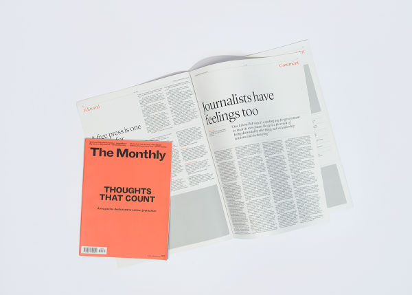
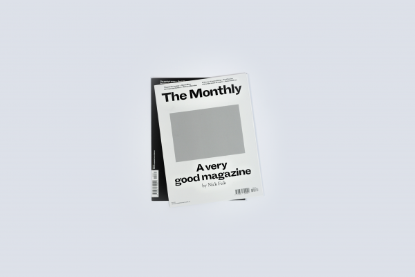

News that lasts.
About
Schwartz Media publishes intelligent news and current affairs
that breaks the 24-hour news cycle. We offer a nuanced examination
of Australia and the world, focused on fresh insight and literary
expression. Our audience reads to know, not just to agree. We
invest in long-form journalism where the issues demand it,
providing writing of a quality that makes difficult topics clear.
Schwartz Media publishes Australia’s most respected writers across
The Saturday Paper, The Monthly magazine and the daily podcast
7am, alongside our sister publications, Quarterly Essay and
Australian Foreign Affairs.
View our Companies
Journalism
Our journalists create in-depth, independent, original public
interest reporting, focusing on storytelling and insight.
Learn more


The Monthly
The Monthly publishes long-form journalism from the nation's
leading writers and thinkers, covering Australian politics, culture
and ideas.
Learn more
Advertise
The Saturday Paper
The Saturday Paper is a weekly newspaper, dedicated to telling the
whole story. It publishes long-form accounts of the week’s key
stories.
Learn more
Advertise


7am
7am is a daily news podcast that tells the big stories through
in-depth interviews and sharp analysis.
Learn more
Advertise
Quarterly Essay
 Quarterly Essay is the leading agenda-setting journal of politics
and culture in Australia.
Learn more
Advertise
Quarterly Essay is the leading agenda-setting journal of politics
and culture in Australia.
Learn more
Advertise
Quarterly Essay is the leading agenda-setting journal of politics
and culture in Australia.
Learn more
Advertise
Australian Foreign Affairs
 Australian Foreign Affairs is the country’s leading foreign affairs
journal.
Learn more
Advertise
Australian Foreign Affairs is the country’s leading foreign affairs
journal.
Learn more
Advertise
Australian Foreign Affairs is the country’s leading foreign affairs
journal.
Learn more
Advertise
Careers
Work at the country’s leading independent publisher.
Learn more
News
Keep in touch with what is happening at Schwartz Media.
Learn more
Contact
Get in touch with our editorial and advertising teams.
Learn more